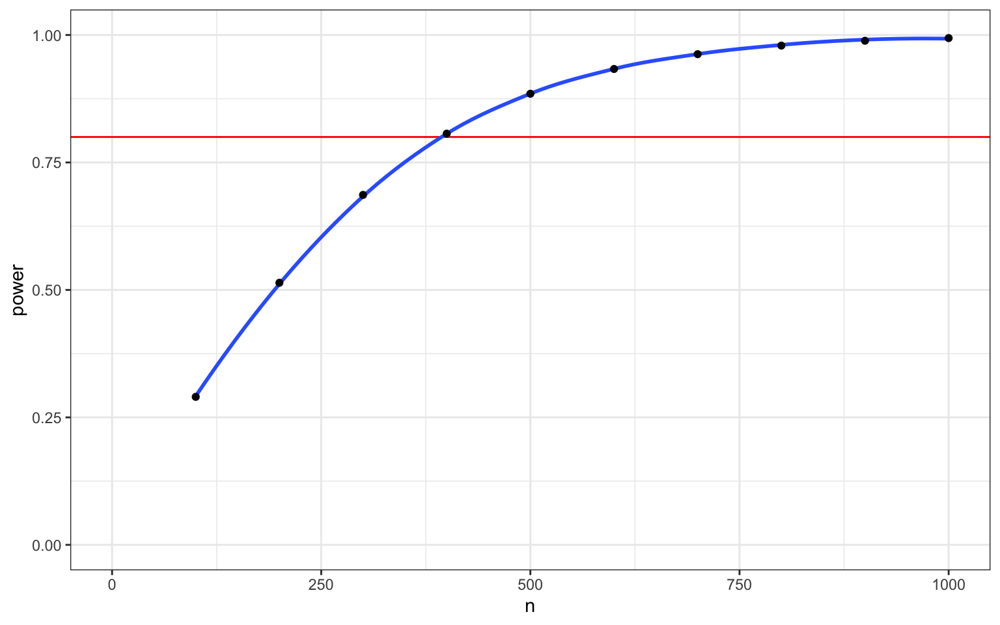
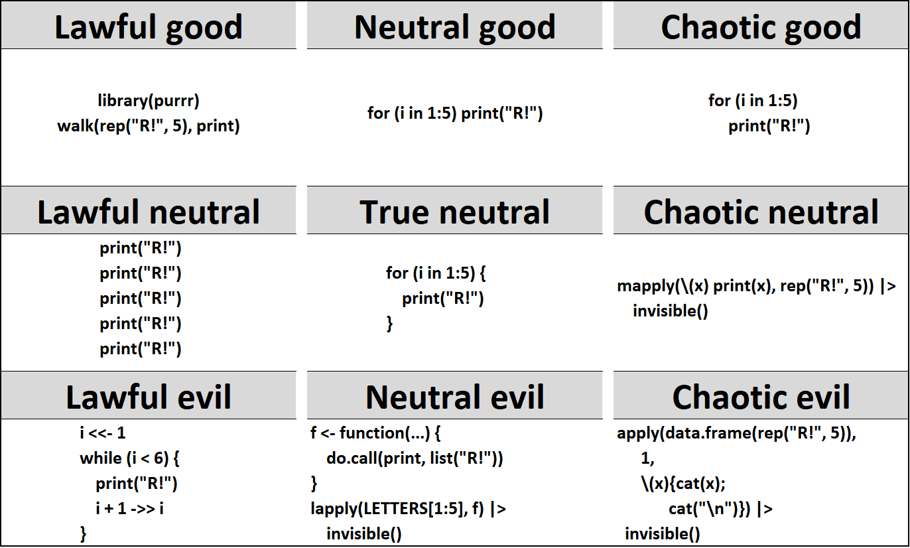

[1] "A" "B" "A" "B" "A" "B" "A" "B" "A" "B" "A" "B" "A" "B" "A" "B" "A" "B" "A"
[20] "B" "A" "B" "A" "B"8 Iteration & Functions

Intended Learning Outcomes
Setup
- Open your
reproresproject - Create a new quarto file called
03-dataviz.qmd - Update the YAML header
- Replace the setup chunk with the one below:
```{r}
#| label: setup
#| include: false
library(tidyverse) # loads purrr for iteration
library(broom) # converts test output to tidy tables
set.seed(8675309) # makes sure random numbers are reproducible
```Download the Apply functions with purrr cheat sheet.
8.1 Iteration functions
In the next two lectures, we are going to learn more about iteration (doing the same commands over and over) and custom functions through a data simulation exercise, which will also prepare us more traditional statistical topics. We first learned about the two basic iteration functions, rep() and seq() in the Working with Data chapter.
8.1.1 rep()
The function rep() lets you repeat the first argument a number of times.
Use rep() to create a vector of alternating "A" and "B" values of length 24.
If you don’t specify what the second argument is, it defaults to times, repeating the vector in the first argument that many times. Make the same vector as above, setting the second argument explicitly.
[1] "A" "B" "A" "B" "A" "B" "A" "B" "A" "B" "A" "B" "A" "B" "A" "B" "A" "B" "A"
[20] "B" "A" "B" "A" "B"If the second argument is a vector that is the same length as the first argument, each element in the first vector is repeated than many times. Use rep() to create a vector of 11 "A" values followed by 3 "B" values.
You can repeat each element of the vector a sepcified number of times using the each argument, Use rep() to create a vector of 12 "A" values followed by 12 "B" values.
[1] "A" "A" "A" "A" "A" "A" "A" "A" "A" "A" "A" "A" "B" "B" "B" "B" "B" "B" "B"
[20] "B" "B" "B" "B" "B"What do you think will happen if you set both times to 3 and each to 2?
8.1.2 seq()
The function seq() is useful for generating a sequence of numbers with some pattern.
Use seq() to create a vector of the integers 0 to 10.
You can set the by argument to count by numbers other than 1 (the default). Use seq() to create a vector of the numbers 0 to 100 by 10s.
The argument length.out is useful if you know how many steps you want to divide something into. Use seq() to create a vector that starts with 0, ends with 100, and has 12 equally spaced steps (hint: how many numbers would be in a vector with 2 steps?).
8.1.3 replicate()
You can use the replicate() function to run a function n times.
For example, you can get 3 sets of 5 numbers from a random normal distribution by setting n to 3 and expr to rnorm(5).
[,1] [,2] [,3]
[1,] 1.0240772 1.0030439 1.5912356
[2,] -0.4327152 0.2342534 1.0063919
[3,] 0.4384483 -0.1217803 -1.7631158
[4,] -1.4106443 -0.3635024 -1.0988308
[5,] 0.9016948 0.5873456 0.7136377By default, replicate() simplifies your result into a matrix that is easy to convert into a table if your function returns vectors that are the same length. If you’d rather have a list of vectors, set simplify = FALSE.
8.1.4 map() and apply() functions
purrr::map() and lapply() return a list of the same length as a vector or list, each element of which is the result of applying a function to the corresponding element. They function much the same, but purrr functions have some optimisations for working with the tidyverse. We’ll be working mostly with purrr functions in this course, but apply functions are very common in code that you might see in examples on the web.
Imagine you want to calculate the power for a two-sample t-test with a mean difference of 0.2 and SD of 1, for all the sample sizes 100 to 1000 (by 100s). You could run the power.t.test() function 20 times and extract the values for “power” from the resulting list and put it in a table.
p100 <- power.t.test(n = 100, delta = 0.2, sd = 1, type="two.sample")
# 18 more lines
p1000 <- power.t.test(n = 500, delta = 0.2, sd = 1, type="two.sample")
tibble(
n = c(100, "...", 1000),
power = c(p100$power, "...", p1000$power)
)| n | power |
|---|---|
| 100 | 0.290266404572216 |
| … | … |
| 1000 | 0.884788352886661 |
However, the apply() and map() functions allow you to perform a function on each item in a vector or list. First make an object n that is the vector of the sample sizes you want to test, then use lapply() or map() to run the function power.t.test() on each item. You can set other arguments to power.t.test() after the function argument.
These functions return a list where each item is the result of power.t.test(), which returns a list of results that includes the named item “power”. This is a special list that has a summary format if you just print it directly:
Two-sample t test power calculation
n = 100
delta = 0.2
sd = 1
sig.level = 0.05
power = 0.2902664
alternative = two.sided
NOTE: n is number in *each* groupBut you can see the individual items using the str() function.
List of 8
$ n : num 100
$ delta : num 0.2
$ sd : num 1
$ sig.level : num 0.05
$ power : num 0.29
$ alternative: chr "two.sided"
$ note : chr "n is number in *each* group"
$ method : chr "Two-sample t test power calculation"
- attr(*, "class")= chr "power.htest"sapply() is a version of lapply() that returns a vector or array instead of a list, where appropriate. The corresponding purrr functions are map_dbl(), map_chr(), map_int() and map_lgl(), which return vectors with the corresponding data type.
You can extract a value from a list with the function [[. You usually see this written as pcalc[[1]], but if you put it inside backticks, you can use it in apply and map functions.
[1] 0.2902664 0.5140434 0.6863712 0.8064964 0.8847884 0.9333687 0.9623901
[8] 0.9792066 0.9887083 0.9939638We use map_dbl() here because the value for “power” is a double.
[1] 0.2902664 0.5140434 0.6863712 0.8064964 0.8847884 0.9333687 0.9623901
[8] 0.9792066 0.9887083 0.9939638We can use the map() functions inside a mutate() function to run the power.t.test() function on the value of n from each row of a table, then extract the value for “power”, and delete the column with the power calculations.

8.2 Custom functions
In addition to the built-in functions and functions you can access from packages, you can also write your own functions (and eventually even packages!).
8.2.1 Structuring a function
The general structure of a function is as follows:
Here is a very simple function. Can you guess what it does?
Let’s make a function that reports p-values in APA format (with “p = [rounded value]” when p >= .001 and “p < .001” when p < .001).
First, we have to name the function. You can name it anything, but try not to duplicate existing functions or you will overwrite them. For example, if you call your function rep, then you will need to use base::rep() to access the normal rep function. Let’s call our p-value function report_p and set up the framework of the function.
8.2.2 Arguments
We need to add one argument, the p-value you want to report. The names you choose for the arguments are private to that argument, so it is not a problem if they conflict with other variables in your script. You put the arguments in the parentheses of function() in the order you want them to default (just like the built-in functions you’ve used before).
8.2.3 Argument defaults
You can add a default value to any argument. If that argument is skipped, then the function uses the default argument. It probably doesn’t make sense to run this function without specifying the p-value, but we can add a second argument called digits that defaults to 3, so we can round p-values to any number of digits.
Now we need to write some code inside the function to process the input arguments and turn them into a returned output. Put the output as the last item in function.
You might also see the returned output inside of the return() function. This does the same thing.
When you run the code defining your function, it doesn’t output anything, but makes a new object in the Environment tab under Functions. Now you can run the function.
8.2.4 Scope
What happens in a function stays in a function. You can change the value of a variable passed to a function, but that won’t change the value of the variable outside of the function, even if that variable has the same name as the one in the function.
8.2.5 Warnings and errors
What happens when you omit the argument for
p? Or if you set p to 1.5 or “a”?
You might want to add a more specific warning and stop running the function code if someone enters a value that isn’t a number. You can do this with the stop() function.
If someone enters a number that isn’t possible for a p-value (0-1), you might want to warn them that this is probably not what they intended, but still continue with the function. You can do this with warning().
report_p <- function(p, digits = 3) {
if (!is.numeric(p)) stop("p must be a number")
if (p <= 0) warning("p-values are normally greater than 0")
if (p >= 1) warning("p-values are normally less than 1")
if (p < .001) {
reported = "p < .001"
} else {
roundp <- round(p, digits)
reported = paste("p =", roundp)
}
reported
}Error in report_p(): argument "p" is missing, with no defaultError in report_p("a"): p must be a numberWarning in report_p(-2): p-values are normally greater than 0Warning in report_p(2): p-values are normally less than 1[1] "p < .001"
[1] "p = 2"8.3 Iterating your own functions
8.3.1 Build code
First, let’s build up the code that we want to iterate.
8.3.1.1 Simulate and structure data
Create a vector of 20 random numbers drawn from a normal distribution with a mean of 5 and standard deviation of 1 using the rnorm() function and store them in the variable A.
A tibble is a type of table or data.frame. The function tibble::tibble() creates a tibble with a column for each argument. Each argument takes the form column_name = data_vector.
Create a table called dat including two vectors: A that is a vector of 20 random normally distributed numbers with a mean of 5 and SD of 1, and B that is a vector of 20 random normally distributed numbers with a mean of 5.5 and SD of 1.
8.3.1.2 Statistical test
You can run a Welch two-sample t-test by including the two samples you made as the first two arguments to the function t.test. You can reference one column of a table by its names using the format table_name$column_name
Welch Two Sample t-test
data: dat$A and dat$B
t = 0.6844, df = 34.978, p-value = 0.4982
alternative hypothesis: true difference in means is not equal to 0
95 percent confidence interval:
-0.3888602 0.7843838
sample estimates:
mean of x mean of y
5.408082 5.210320 You can also convert the table to long format using the gather function and specify the t-test using the format dv_column~grouping_column.
Welch Two Sample t-test
data: score by group
t = 0.6844, df = 34.978, p-value = 0.4982
alternative hypothesis: true difference in means between group A and group B is not equal to 0
95 percent confidence interval:
-0.3888602 0.7843838
sample estimates:
mean in group A mean in group B
5.408082 5.210320 8.3.1.3 Tidy output
You can use the function broom::tidy() to extract the data from a statistical test in a table format. The example below pipes everything together.
tibble(
A = rnorm(20, 5, 1),
B = rnorm(20, 5.5, 1)
) |>
gather(group, score, A:B) |>
t.test(score~group, data = _) |>
broom::tidy()| estimate | estimate1 | estimate2 | statistic | p.value | parameter | conf.low | conf.high | method | alternative |
|---|---|---|---|---|---|---|---|---|---|
| -0.4807365 | 5.097443 | 5.57818 | -1.455418 | 0.1537959 | 37.86072 | -1.149491 | 0.1880185 | Welch Two Sample t-test | two.sided |
Note
In the pipeline above, t.test(score~group, data = _) uses the _ notation to change the location of the piped-in data table from it’s default position as the first argument to a different position.
8.3.1.4 Extract important values
Finally, we can extract a single value from this results table using pull().
8.3.2 Custom function
Next, we can group the code above inside a function.
First, name your function t_sim and wrap the code above in a function with no arguments.
Run it a few times to see what happens.
8.3.2.1 Iterate
Let’s run the t_sim function 1000 times, assign the resulting p-values to a vector called reps, and check what proportion of p-values are lower than alpha (e.g., .05). This number is the power for this analysis.
8.3.2.2 Set seed
You can use the set.seed function before you run a function that uses random numbers to make sure that you get the same random data back each time. You can use any integer you like as the seed.
Warning
Make sure you don’t ever use set.seed() inside of a simulation function, or you will just simulate the exact same data over and over again.
![An alignment chart meme: Lawful Good = set.seed(1234), Neutral Good = *picks random number, sets it as seed*, Chaotic Good = *pop culture reference*, Lawful Neutral = set.seed(420), True Neutral = set.seed(1), Chaotic Neutral = str <-'I am awesome.'; set.seed(str_length(str)), Lawful Evil =set.seed(666), Neutral Evil: *does not set a seed*, Chaotic Evil = set.seed(.Random.seed[1])](images/memes/seed_alignment.png)
8.3.2.3 Add arguments
You can just edit your function each time you want to calculate power for a different sample n, but it is more efficient to build this into your function as an arguments. Redefine t_sim, setting arguments for the mean and SD of group A, the mean and SD of group B, and the number of subjects per group. Give them all default values.
8.3.3 Test your function
Test your function with some different values to see if the results make sense.
Use replicate to calculate power for 100 subjects/group with an effect size of 0.2 (e.g., A: m = 0, SD = 1; B: m = 0.2, SD = 1). Use 1000 replications.
Compare this to power calculated from the power.t.test function.
Two-sample t test power calculation
n = 100
delta = 0.2
sd = 1
sig.level = 0.05
power = 0.2902664
alternative = two.sided
NOTE: n is number in *each* groupCalculate power via simulation and power.t.test for the following tests:
- 20 subjects/group, A: m = 0, SD = 1; B: m = 0.2, SD = 1
- 40 subjects/group, A: m = 0, SD = 1; B: m = 0.2, SD = 1
- 20 subjects/group, A: m = 10, SD = 1; B: m = 12, SD = 1.5
8.4 Exercises
Explain why this meme is funny.

- Lawful good
r library(purrr) walk(rep("R!", 5), print) - Neutral good
r for (i in 1:5) print("R!") - Chaotic good
r for (i in 1:5) print("R!") - Lawful neutral
r print("R!") print("R!") print("R!") print("R!") print("R!") - True neutral
r for (i in 1:5) { print("R!") } - Chaotic neutral
r mapply(\(x) print(x), rep("R!", 5)) |> invisible() - Lawful evil
r i <<- 1 while (i < 6) { print("R!") i + 1 ->> i } - Neutral evil
r f <- function(...) { do.call(print, list("R!")) } lapply(LETTERS[1:5], f) |> invisible() - Chaotic evil
r apply(data.frame(rep("R!", 5)), 1, \(x){cat(x); cat("\n")}) |> invisible()
Glossary
| term | definition |
|---|---|
| argument | A variable that provides input to a function. |
| data-type | The kind of data represented by an object. |
| double | A data type representing a real decimal number |
| function | A named section of code that can be reused. |
| iteration | Repeating a process or function |
| matrix | A container data type consisting of numbers arranged into a fixed number of rows and columns |
Further Resources
- Chapters 19 and 21 of R for Data Science
- Apply functions with purrr cheat sheet